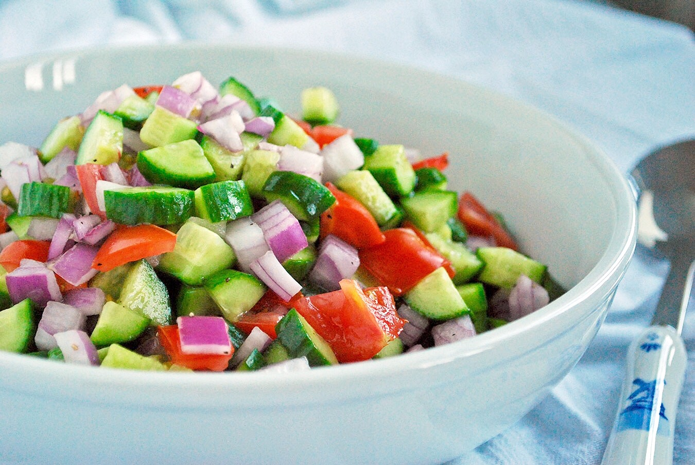

Shirazi Salad

What you need to know about Shirazi Salad
A tasty Persian salad which originated in the
town of Shiraz in Southern Iran. Almost always
served as a side dish, it's crunchy, bright,
refreshing with a mild citrus-flavored dressing,
and is served year-round
Ingredients
- 4 medium firm Roma tomatoes, finely diced
- 1 medium English cucumber, finely diced
- ½ cup diced red onion/li>
- 1 tablespoon chopped fresh cilantro
- 1 tablespoon dried mint
Directions
- Step 1
- Combine tomatoes, English cucumber, onion, and cilantro
in a large bowl. Sprinkle with mint and transfer to the
refrigerator for flavors to meld, at least 30 minutes.
- Step 2
- Whisk together lime juice, olive oil, salt, pepper,
and sumac in a small bowl until well combined.
Drizzle dressing over the salad right before serving.
Toss well to combine, and garnish with fresh mint leaves.